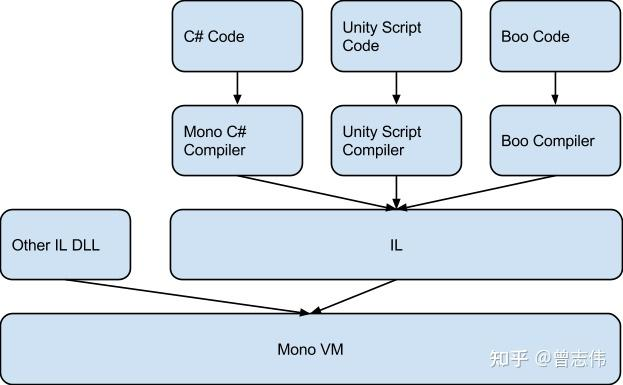

Mono和IL2CPP的区别
一、Unity是如何实现跨平台的？
跨平台：一次编译，不需要任何代码修改，应用程序就可以运行在任意在平台上跑，即代码不依赖于操作系统，也不依赖硬件环境。
Unity实现跨平台是通过Unity脚本后处理(Scripting Backend)的两种方式Mono和IL2CPP。
三种编译方式
即时编译（Just in time,JIT）： 程序运行过程中，将CIL的byte code转译为目标平台的原生码。提前编译（Ahead of time,AOT）： 程序运行之前，将.exe或.dll文件中的CIL的byte code部分转译为目标平台的原生码并且存储，程序运行中仍有部分CIL的byte code需要JIT编译。完全静态编译（Full ahead of time,Full-AOT）： 程序运行前，将所有源码编译成目标平台的原生码。
二、Mono介绍
工作流程
采用JIT即时编译技术。C#代码首先被编译成中间语言(IL), 然后作为托管程序集(.NET, DLL文件)与应用程序集一起发布。当应用程序在用户设备上运行时，JIT编译器会按需将这些IL代码编译成原生机器码并执行。
优点
- 构建应用非常快
- 由于 JIT 编译器在运行时存在，Mono 可以支持在运行时动态创建和执行代码。
缺点
- 开销大， 运行时编译本身需要消耗 CPU 时间和内存。
- 受限于Mono自身32位运行，Apple Store仅支持64位应用
三、IL2CPP(AOT编译)
工作流程
采用AOT提前编译技术。C#代码首先被编译成IL, 然后IL2CPP后端在构建过程中将所有托管程序集转换为标准C++代码。随后，原生平台编译器会将这些C++代码编译成目标平台特定的原生机器码。
优点
- 程序的运行效率比Mono高，运行速度快
- 多平台移植非常方便
缺点
- 构建速度慢
四、对比
| 特性 | IL2CPP | Mono |
|---|---|---|
| 编译类型 | 提前编译 (AOT) | 即时编译 (JIT) |
| 构建时间 | 更长 | 更快 |
| 运行时性能 | 通常更快 | 通常更慢 |
| 二进制文件大小 | 初始较大（但代码剥离可显著减小） | 初始较小 |
| 平台支持 | 广泛（iOS/主机必需，支持 64 位） | 有限（iOS 11+、UWP 不支持） |
| Reflection.Emit 支持 | 不支持 | 支持 |
| 逆向工程难度 | 更难 | 更容易 |
五、编译区别

三大脚本被编译成IL，在游戏运行的时候，IL和项目里其他第三方兼容的DLL一起，放入Mono VM虚拟机，由虚拟机解析成机器码，并且执行IL2CPP做的改变由下图红色部分标明：

在得到中间语言IL后，使用IL2CPP将他们重新变回C++代码，然后再由各个平台的C++编译器直接编译成能执行的原生汇编代码。